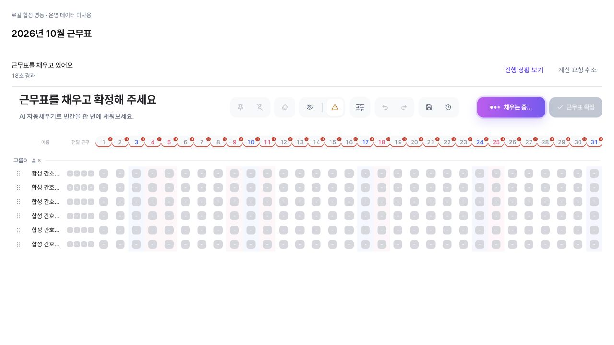
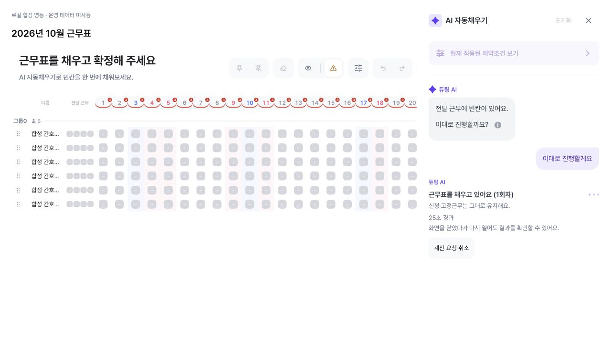
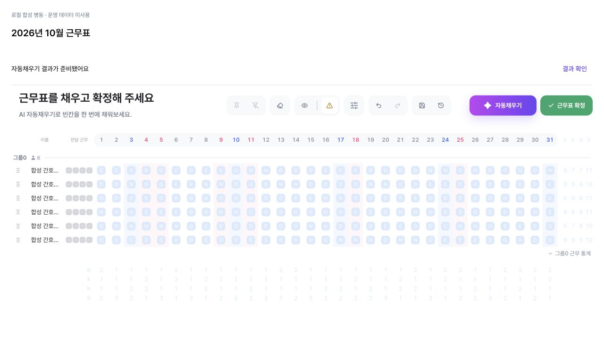
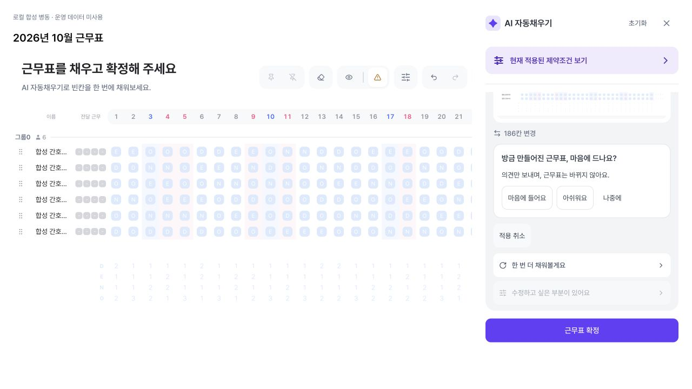
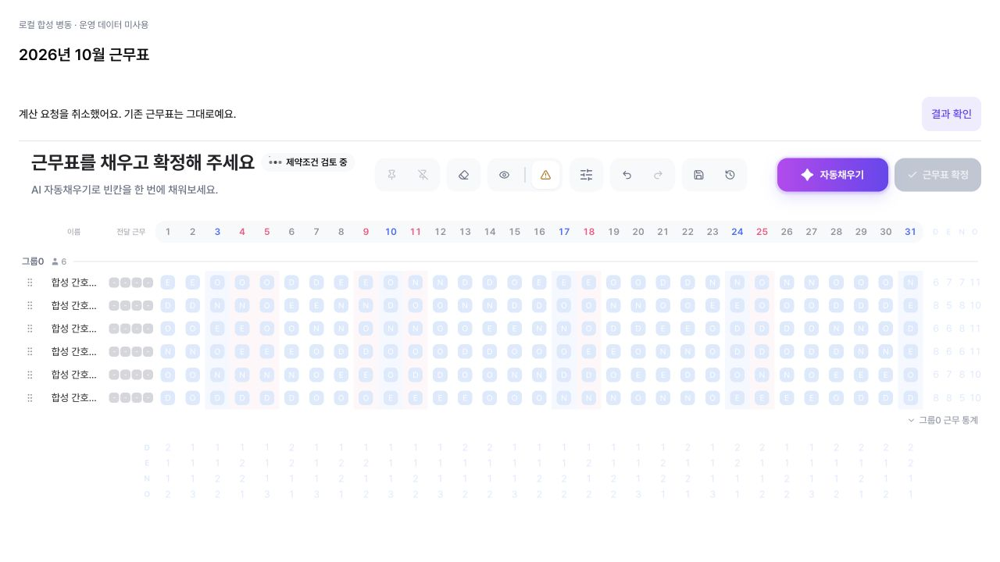
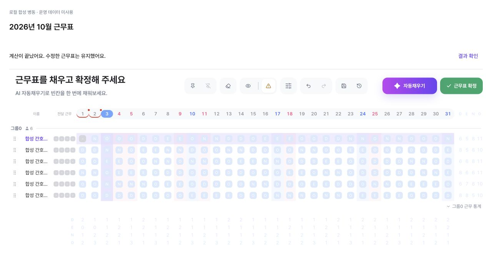
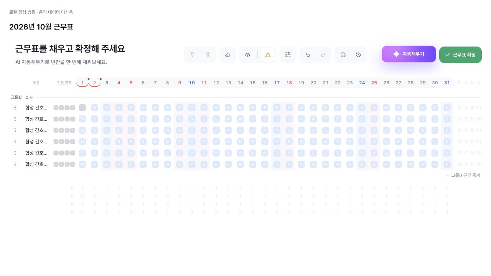

기존 로딩창은 유지하고,
닫아도 같은 계산으로 돌아올 수 있게
프론트 PR #162 · 로컬 합성 병동 · 실제 AiAutofill 페이지와 Spring/FastAPI HTTP 연결 · 운영 미배포
중앙 로딩창과 진행 사이드바를 동시에 띄우던 연결을 수정했다. 중앙 카드·아이콘·완료 연출은 유지한다. 닫으면 근무표 위 작업 표시로 바뀌고, 같은 작업의 진행 상황·취소·결과로 다시 접근한다. 사이드바의 계산 중 안내는 박스 대신 대화 안의 일반 문장으로 표시한다.
남은 제한: 추가 재작성 한 건에서 Python·Spring 검증 불일치로 결과가 차단됐다. 서버 계산 계약 문제는 이번 UI 수정으로 해결하지 않았다. 작은 화면은 브라우저 크기 설정이 실제로 적용되지 않아 미검증이다. 개발계·운영 배포 완료를 뜻하지 않는다.
1. AS-IS / TO-BE — 지금 구현된 차이
| 사용자 관점 | AS-IS / Before | TO-BE / After — 구현됨 | 이유 / Why |
|---|---|---|---|
| 계산 시작 | 중앙 로딩창과 오른쪽 패널이 함께 보임. | 기존 중앙 로딩창만 표시. 대화 보기를 누르면 로딩창을 숨기고 패널을 표시. | 한 번에 하나의 진행 화면. |
| 기존 로딩 디자인 | 흰 카드·격자 아이콘·진행률 %. | 카드·아이콘·완료 연출 유지. 백그라운드 작업은 추정 % 대신 서버의 실제 단계·경과 시간. | %를 실제 계산 진척률로 오해하지 않게 함. 구형 동기 로딩은 기존 동작 유지. |
| 30초 초과 | 계산 경로에 따라 결과 없이 종료될 수 있음. | 오류로 바꾸지 않고 “시간이 조금 더 필요해 계산을 이어가고 있어요.” 표시. | 30초가 지나도 같은 작업의 결과를 기다림. 계산 예산은 최대 4분. |
| 창 닫기 | 패널 X를 누르면 전체 화면 로딩이 남아 갇힘. | “창을 닫고 계속 계산”과 패널 X는 계산을 유지하며 가림막을 제거. 작업 표시가 남음. | 닫기와 취소를 분리. |
| 다시 열기·취소 | 패널을 닫으면 취소·재열기 접근이 막힘. | 작업 표시의 “진행 상황 보기”로 같은 대화 재열기. 작업 표시·로딩창·대화에서 같은 취소 요청 가능. | 새 계산을 중복 요청하지 않음. |
| 사이드바 진행 안내 | 보라색 카드 안에 상태·안내문·시간을 나열. | “듀팅 AI” 아래에 실제 상태 문장을 갱신. 기존 점 애니메이션만 사용. | 대화 흐름을 유지. 타이핑 흉내·허구의 계산 설명 없음. |
| 닫은 상태에서 완료 | 완료 후 돌아오는 경로가 불명확. | “자동채우기 결과가 준비됐어요 · 결과 확인”. 계속 기다렸다면 기존 완료 연출 후 결과 대화로 전환. | 열린 상태와 닫힌 상태 모두 결과 접근 가능. |
| 계산 중 표 수정 | 계산 동안 표 편집 잠금. | 창을 닫으면 기존 표를 보며 편집 가능. 표가 바뀌었다면 완료 결과가 자동으로 덮어쓰지 않음. | 현재 편집을 보호하고 새 결과를 별도로 확인. |
2. 수정 전후 실제 페이지 화면
임시 네이티브 표를 사용하지 않았다. 제품의 AiAutofill 상위 컴포넌트·툴바·근무표·사이드바·로딩창을 그대로 마운트해 검증했다. 합성 관리자 로그인과 격리된 실제 Spring/MySQL/Redis/FastAPI를 연결했다. 전체 앱 내비게이션 셸·운영 URL 검증은 아니다.

수정 전 커밋 75ca09b2의 실제 페이지. 비교 캡처는 기존 동기 경로이며, 비동기 박스 카드가 함께 보이던 이전 재현은 아래 별도 링크에 보존했다.

사이드바가 함께 표시되지 않는다. 서버 상태·경과 시간과 닫기·대화 보기·취소를 제공한다.
3. 닫기 → 다시 열기 → 완료








4. 취소와 현재 편집 보호




5. PO·PM이 확인할 항목과 현재 증거
| 행동 | 기대 결과 | 로컬 확인 결과 |
|---|---|---|
| 자동채우기 실행 | 기존 중앙 카드가 보이고 진행 사이드바와 중복되지 않음. | 실제 페이지 확인. |
| 30초 넘게 대기 | 작업 유지와 지연 안내. 추정 % 없음. | 37초 경과 캡처, 51.10초 완료 확인. |
| 창 닫고 진행 상황 재열기 | 가림막 제거, 작업 표시 유지, 동일 작업 재열기. | 실제 페이지 확인. 결과 생성 요청 중복 없음. |
| 열린 사이드바 X 클릭 | 전체 화면 로딩으로 되돌아가지 않고 작업 표시로 복귀. | 실제 페이지 확인. |
| 닫은 상태에서 완료·결과 열기 | 결과 준비 안내와 결과 접근. | 실제 페이지에서 186칸 결과 확인. |
| 중앙 창에서 계속 대기 | 완료 연출 후 결과 대화 열기. | 실제 페이지에서 46.41초, 1칸 반영 확인. |
| 취소 후 늦은 결과 도착 | 기존 표 유지, 취소 상태 유지. | 취소 직후 및 원격 계산 종료 후 확인. |
| 계산 중 표 변경 | 현재 표를 자동으로 덮어쓰지 않음. | 실제 1칸 결과를 차단한 케이스 확인. |
| 검증이 거부한 결과 | 실패 안내, 기존 표 유지, 성공처럼 표현하지 않음. | 추가 실패 케이스로 확인. 모순된 성공 안내를 수정했다. 서버 계약 불일치 자체는 미해결. |
| 새로고침·재진입 | 원본 비교 후 같은 요청 복구, 중복 실행 방지. | 기존 재진입 회귀 테스트 유지. 이번 실제 페이지의 별도 새로고침 E2E는 미실시. |
| 375px 화면 | 로딩·취소·재열기 버튼 접근 가능. | 미확인. 브라우저 설정을 요청했으나 실제 DOM 뷰포트가 1280×720로 유지됐다. |
6. 추가 재작성에서 발견한 제한
계산 중 수정으로 기존 인력 부족이 생긴 표를 다시 작성한 추가 작업은 37.59초 후 REJECTED로 끝났다. Python·Spring의 위반 비교 결과 불일치(PYTHON_SPRING_DELTA_MISMATCH, PYTHON_CONTRACT_UNVERIFIED) 때문에 결과를 적용하지 않았다. 이번 변경에서 서버의 검증을 완화하거나 결과를 강제로 적용하지 않았다.
이 실패를 성공 문구로 설명하던 프론트 안내도 수정했다. 지금은 “근무표를 확인하는 중 문제가 생겼어요. 기존 근무표는 그대로예요. 다시 시도해 주세요.”라고 안내한다. 전체 스케줄 생성 품질 검증이나 운영 배포 승인까지 완료한 것은 아니다.

7. 검증 범위와 재현 근거
실제 페이지·진행 UI 관련 311개와 오류 안내 44개, 총 355개 테스트 통과. 새 진행 화면·작업 표시·부모 연결·기존 생성 및 조절·재진입·폴링 포함. 실패 안내 변경 후 기존 사이드바 186개도 다시 통과했다. 최종 타입 검사·ESLint·포맷·프로덕션 빌드도 통과했다. 격리된 Spring HTTP 호스트 테스트는 정상 종료했고, 임시 API·DB·Redis·개발 서버는 종료·정리했다. 커밋은 PR 본문에서 확인할 수 있다.
35~45초 지연은 실제 CP-SAT 실행 전에 테스트용 미들웨어가 주었다. 오래 걸리는 응답의 화면 동선을 검증한 것이며 솔버 CPU 사용 시간이나 모든 병동의 생성 성공률을 뜻하지 않는다. 반복 QA를 위해 격리된 합성 병동의 Redis 횟수 카운터만 초기화했다. 운영 정책은 바꾸지 않았다.
개발자용 변경·재현
제품 상위 페이지 AiAutofill을 Router/QueryClient provider와 함께 마운트하는 tests/integration/autofill-page.html을 추가했다. 합성 계정은 opt-in Spring HTTP fixture에서만 제공한다. 모의 캘린더/사이드바 조합을 실제 페이지 검증으로 취급하지 않는다.
sidebar의 실제 operation·취소 동작을 부모에 전달한다. 부모가 중앙 로딩/닫힌 작업 표시/열린 대화 중 하나를 보여준다. 사이드바는 숨겨도 마운트와 폴링을 유지한다. 취소는 같은 API 경로와 영속 상태 보호를 사용한다. 원본·고정·요청·행 순서 검증을 우회하지 않는다.
Flyway migration 없음. 서버 코드 변경 없음. 운영 데이터·유료 모델 호출·외부 제공자 배포 없음.
실제 페이지 작업 상태·시간·검증 범위 · 이전 HTTP 연결 검증 · 수정 전 비동기 PR의 중앙 로딩 + 박스 상태 재현